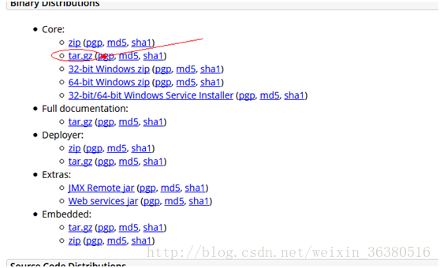

原文连接:https://www.cnblogs.com/qwlscn/p/11489863.html
本文大部分参考网上其他教程，是实际操作后回过头来的一些总结，希望可以对正在部署项目的你有所帮助。
基本环境：Centos7、tomcat8、jdk8，MySQL5.6、nginx
安装JDK
yum install java-1.8.0-openjdk* -y使用yum安装，无需配置系统环境，执行完这条命令后JDK就安装好了。
安装Mysql
我们这里使用Mysql，如果使用MariaDB ，一般云服务器有安装，只需要升级就可以。
安装步骤：
# wget http://dev.mysql.com/get/mysql-community-release-el7-5.noarch.rpm
# rpm -ivh mysql-community-release-el7-5.noarch.rpm
# yum install mysql-community-server
重启Mysql服务：
# service mysqld restart重启后，我们使用如下命令进入MySQL，因为MySQL默认没有密码。
# mysql -u root
进入MySQL后，我们使用如下MySQL
set password for 'root'@'localhost' =password('password');至此，MySQL数据库基本安装完成，有时开发过程中，为了方便，希望通过本地的可视化工具远程连接线上的数据库，这时可以运行以下命令来开放数据库的远程连接。
grant all privileges on *.* to root@'%'identified by 'password';安装tomcat
tomcat的部署最简单了：
1，直接下载然后拖到linux的/home文件夹下面（下载版本如下）；

2，通过Xftp将打包好的war文件拖拽到webapps文件夹下，这个和在windows下的操作无区别，这部分细节不说；
3，启动tomcat服务器指令：
cd /home/apache-tomcat-8.5.23/bin nohup ./startup.sh &
停止服务指令：
./ shutdown.sh
执行跟踪日志命令
cd /home/apache-tomcat-8.5.23/logs
tail -100f catalina.out进入编辑器进行修改，修改完成后点击 esc，然后输入 :wq 这样就保存退出了。之后重启tomcat，配置就生效了。
使用Nginx做代理服务器
1、安装gcc g++开发类库
安装make：
yum -y install gcc automake autoconf libtool make
安装g++:
yum install gcc gcc-c++2、选定安装文件目录
可以选择任何目录，本文选择 cd /usr/local/src
cd /usr/local/src
3、安装PCRE库
ftp://ftp.csx.cam.ac.uk/pub/software/programming/pcre/ 下载最新的 PCRE 源码包，使用下面命令下载编译和安装 PCRE 包：
cd /usr/local/src wget ftp://ftp.csx.cam.ac.uk/pub/software/programming/pcre/pcre-8.39.tar.gz tar -zxvf pcre-8.37.tar.gz cd pcre-8.34 ./configure make make install
4、安装zlib库
http://zlib.net/zlib-1.2.11.tar.gz 下载最新的 zlib 源码包，使用下面命令下载编译和安装 zlib包：
cd /usr/local/src
wget http://zlib.net/zlib-1.2.11.tar.gz
tar -zxvf zlib-1.2.11.tar.gz
cd zlib-1.2.11
./configure
make
make install5、安装openssl（某些vps默认没装ssl)
cd /usr/local/src
wget https://www.openssl.org/source/openssl-1.0.1t.tar.gz
tar -zxvf openssl-1.0.1t.tar.gz6、安装nginx
Nginx 一般有两个版本，分别是稳定版和开发版，您可以根据您的目的来选择这两个版本的其中一个，下面是把 Nginx 安装到 /usr/local/nginx 目录下的详细步骤：
cd /usr/local/src
wget http://nginx.org/download/nginx-1.1.10.tar.gz
tar -zxvf nginx-1.1.10.tar.gz
cd nginx-1.1.10
./configure
make
make install7、配置nginx
因为可能apeache占用80端口，apeache端口尽量不要修改，我们选择修改nginx端口。
linux 修改路径/usr/local/nginx/conf/nginx.conf，Windows 下 安装目录\conf\nginx.conf。
修改端口为8090，localhost修改为你服务器ip地址。
8、nginx重启、关闭、启动
启动
启动代码格式：nginx安装目录地址 -c nginx配置文件地址
例如：
[root@LinuxServer sbin]# /usr/local/nginx/sbin/nginx -c /usr/local/nginx/conf/nginx.conf停止
1、查看进程号
[root@LinuxServer ~]# ps -ef|grep nginx
找到nginx master端口
2、杀死进程
[root@LinuxServer ~]# kill -QUIT 2072重启
1、验证nginx配置文件是否正确
方法一：进入nginx安装目录sbin下，输入命令./nginx -t
看到如下显示nginx.conf syntax is ok
nginx.conf test is successful
说明配置文件正确！
Nginx配置正确，我们可以执行重启Nginx命令了，方法是进入nginx可执行目录sbin下，输入命令./nginx -s reload 即可。
喜欢的可以加群：687942640